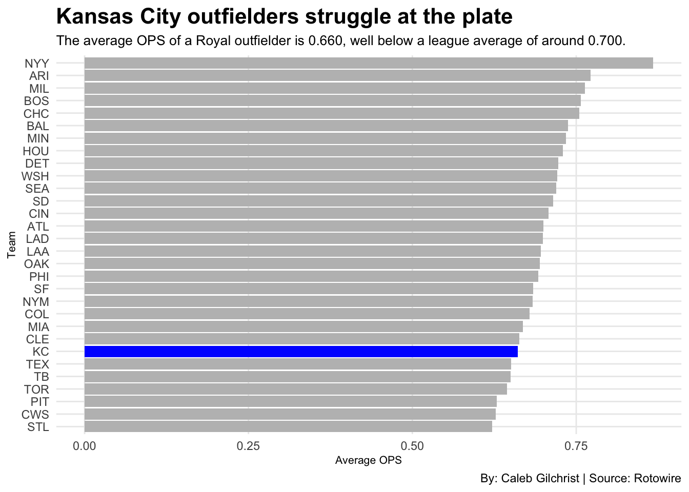
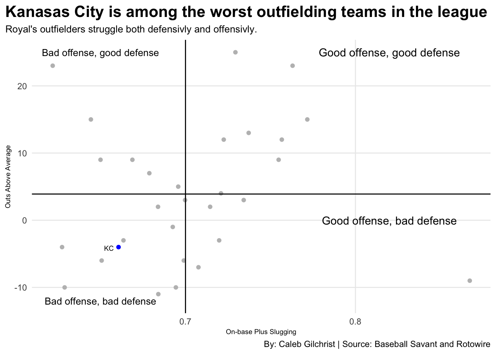

Are the Kansas City Royals Outfielders Really That Bad?
baseball
royals
mlb
Author
Caleb Gilchrist
Published
April 13, 2025
Fans tend to exaggerate parts of their team. “This is our year.” “This team is the worst team of all time.” “Our owner/GM/manager/Double-A equipment manager needs to be fired.” Open up any social media platform and you’ll see a multitude of overreactions. In 2024, the hot topic for Kansas City Royal’s fans were the outfielders. They were considered terrible and a massive liability for the rest of the team.
But are the Royals outfielders really that bad or is it just fans being fans?
The most crucial aspect of any position player is how they fare at the plate. Are they hitting massive moonshots or at least getting on base?
Rows: 396 Columns: 23
── Column specification ────────────────────────────────────────────────────────
Delimiter: ","
chr (3): Player, Team, Pos
dbl (20): Age, G, AB, R, H, 2B, 3B, HR, RBI, SB, CS, BB, SO, SH, SF, HBP, AV...
ℹ Use `spec()` to retrieve the full column specification for this data.
ℹ Specify the column types or set `show_col_types = FALSE` to quiet this message.
Rows: 724 Columns: 23
── Column specification ────────────────────────────────────────────────────────
Delimiter: ","
chr (3): Player, Team, Pos
dbl (20): Age, G, AB, R, H, 2B, 3B, HR, RBI, SB, CS, BB, SO, SH, SF, HBP, AV...
ℹ Use `spec()` to retrieve the full column specification for this data.
ℹ Specify the column types or set `show_col_types = FALSE` to quiet this message.
`summarise()` has grouped output by 'Pos', 'Player', 'Team'. You can override
using the `.groups` argument.
Code
of242 <- batters24 |>filter(Pos =="OF") |>filter(G >20) |>group_by(Team) |>summarise(SeasonOPS =mean(OPS) )kcof24 <- of242 |>filter( Team =="KC") |>arrange(desc(SeasonOPS)) |>ungroup()ggplot() +geom_bar(data = of242, aes(x =reorder(Team, SeasonOPS), weight = SeasonOPS), fill="grey") +geom_bar(data = kcof24, aes(x =reorder(Team, SeasonOPS), weight = SeasonOPS), fill="blue") +coord_flip() +labs(title ="Kansas City outfielders struggle at the plate",subtitle ="The average OPS of a Royal outfielder is 0.660, well below a league average of around 0.700. ",x ="Team",y ="Average OPS",caption ="By: Caleb Gilchrist | Source: Rotowire" ) +theme_minimal() +theme(plot.title =element_text(size =16, face ="bold"),plot.subtitle =element_text(size =10),axis.title =element_text(size =8),panel.grid.minor =element_blank() )

Whew. The outfielders are not helping Kansas City in the scoring column at all. Well, maybe the Royal’s outfield is contributing elsewhere.
Perhaps they are elite on defense, chasing down pop flys, robbing home runs and making full extension catches to take away extra-base hits. Let’s take a look at what they’re doing in the field. We can measure this by a relatively new statistic called Outs Above Average (OOA). Baseball Savant defines OOA as the cumulative effect of all individual plays a fielder has been credited or debited with. For example, a fielder who catches a 25% Out Probability play gets +.75; one who fails to make the play gets -.25.
Code
ooa2024 <-read_csv("data/ooa2024v2.csv")
Rows: 90 Columns: 3
── Column specification ────────────────────────────────────────────────────────
Delimiter: ","
chr (2): Team, Player
dbl (1): OOA
ℹ Use `spec()` to retrieve the full column specification for this data.
ℹ Specify the column types or set `show_col_types = FALSE` to quiet this message.
Code
teamooa2024 <- ooa2024 |>group_by(Team) |>summarize(TotalOOA =sum(OOA)) |>arrange(desc(TotalOOA))teamooa2024 |>gt() |>cols_label(TotalOOA ="Outs Above Average" ) |>tab_header(title ="Royal's outfielders are subpar on defense",subtitle ="Kansas City ties the Chicago White Sox for worst outfielders in the AL Central." ) |>tab_style(style =cell_text(color ="black", weight ="bold", align ="left"),locations =cells_title("title") ) |>tab_style(style =cell_text(color ="black", align ="left"),locations =cells_title("subtitle") ) |>tab_source_note(source_note =md("By: Caleb Gilchrist | Source: Baseball Savant") ) |>tab_style(locations =cells_column_labels(columns =everything()),style =list(cell_borders(sides ="bottom", weight =px(3)),cell_text(weight ="bold", size =12) ) ) |>tab_style(locations =cells_column_labels(columns =everything()),style =list(cell_borders(sides ="bottom", weight =px(3)),cell_text(weight ="bold", size =12) ) ) |>opt_row_striping() |>opt_table_lines("none") |>fmt_number(columns =c(TotalOOA),decimals =0 ) |>tab_style(style =list(cell_fill(color ="blue"),cell_text(color ="white") ),locations =cells_body(rows = Team =="KC" ) )
Royal's outfielders are subpar on defense
Kansas City ties the Chicago White Sox for worst outfielders in the AL Central.
Team
Outs Above Average
HOU
25
MIL
23
STL
23
ARI
15
TOR
15
BAL
13
BOS
12
DET
12
CHC
9
MIA
9
TB
9
COL
7
LAA
5
WSH
4
ATL
3
MIN
3
NYM
2
SD
2
PHI
−1
CLE
−3
SEA
−3
CWS
−4
KC
−4
LAD
−6
TEX
−6
CIN
−7
NYY
−9
OAK
−10
PIT
−10
SF
−11
By: Caleb Gilchrist | Source: Baseball Savant
Hmmm. The Royals are not really getting much out of their outfielders defensively either.
The Cubs, Brewers and Blue Jays all find themselves towards the top of OOA while at the bottom of offensive production. On the other hand, San Fransico leads the league in offensive production but finds themselves dead last in defense. This makes sense. If an outfielder is not getting it done at the plate or in the field, you would hope that they’re pretty good on the other side of the ball. But the Royal’s outfielders don’t really seem to be average in the top or bottom of innings.
ggplot() +geom_point(data = ofcombined,aes(x = SeasonOPS, y = TotalOOA),color ="grey" ) +geom_point(data = kccombined,aes(x = SeasonOPS, y = TotalOOA),color ="blue" ) +geom_text(aes(x =0.82, y =25),label ="Good offense, good defense",size =4,color ="black" ) +geom_text(aes(x =0.82, y =0),label ="Good offense, bad defense",size =4,color ="black" ) +geom_text(aes(x =0.65, y =25),label ="Bad offense, good defense",size =3.5,color ="black" ) +geom_text(aes(x =0.655, y =-4.15),label ="KC",size =2.5,color ="black" ) +geom_text(aes(x =0.65, y =-12),label ="Bad offense, bad defense",size =3.5,color ="black" ) +geom_hline(yintercept =3.9) +geom_vline(xintercept =0.7) +labs(title ="Kanasas City is among the worst outfielding teams in the league",subtitle ="Royal's outfielders struggle both defensivly and offensivly.",x ="On-base Plus Slugging", y ="Outs Above Average",caption ="By: Caleb Gilchrist | Source: Baseball Savant and Rotowire" ) +theme_minimal() +theme(plot.title =element_text(size =16, face ="bold"),plot.subtitle =element_text(size =10),axis.title =element_text(size =7),panel.grid.minor =element_blank(),plot.title.position ="plot" )

Ouch.
The bad news is that the 2024 Kansas City outfielders were pretty bad. The fans are right. There’s no getting around it.
The good news is there are a few prospects that can give this area of the field a boost. Drew Waters is tearing it up in Triple-A and a call-up seems inevitable. Gavin Cross, the Royal’s sixth-ranked prospect, is currently in Double-A and batting .333 with an OPS of .812. Even current major leaguers like Jonathan India and Maikel Garcia have been flexed into the outfield a few times and it’s looked a little better. At the very least, there’s nowhere to go but up.
The Royals won 86 games last year with some of the worst outfielders in the league. If they can make a few changes, call up some prospects and get their outfielders to be at least in the middle of the pack, it might be enough to bring them over the hump and become a serious contender in the AL Central.